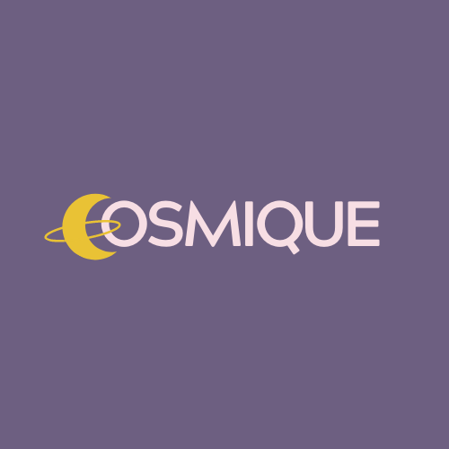
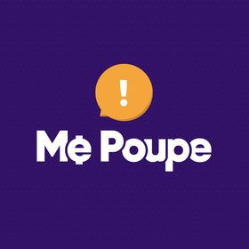
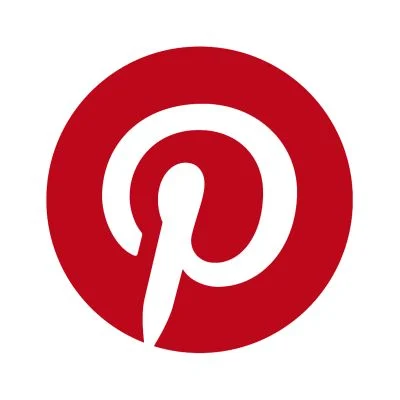
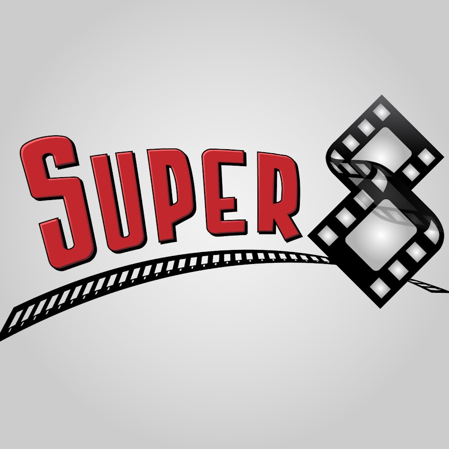

Favoritos
A loja mais fofa e colorida de Charqueadas ♥
Maior e melhor canal de finanças do mundo.
Rede social de compartilhamento de imagens, muito boa
para se inspirar e utilizar em processos criativos.
É um podcast sobre magia e capirotagem.
Melhor canal sobre cinema, filmes e séries.

Podcast apresentado por mulheres desenvolvedoras, focado
em programação, história e notícias da área de TI.